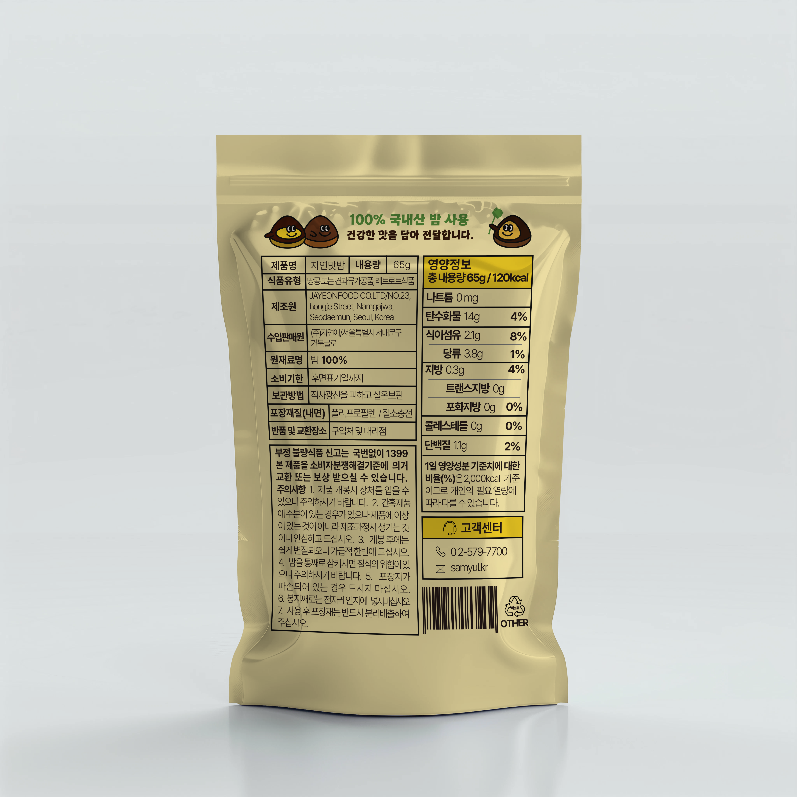
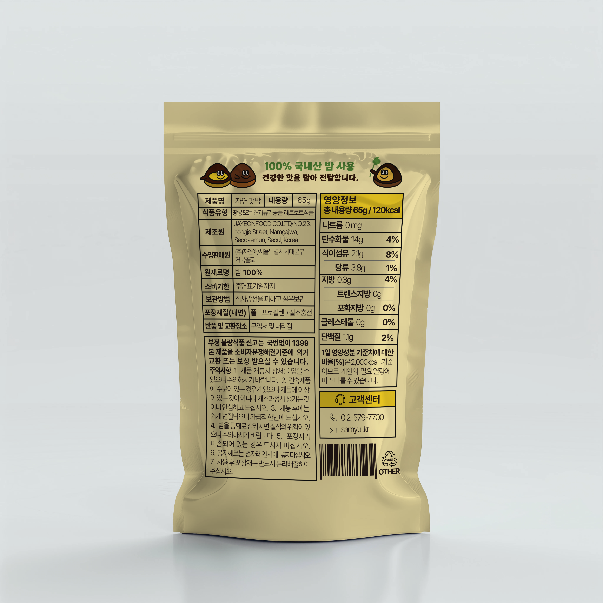

Portfolio Details
 

Project Information
- Category: Package Design
Pouch Packaging
Overview
파우치형 패키지 디자인으로 오프라인 대형마트 및 편의점 유통을 고려하여 선반에서 눈에 띄고 구매 욕구를 유도할 수 있도록 디자인했습니다.
타겟 소비자는 20~50대 여성 및 자녀를 둔 부모층으로 설정했으며, 이를 반영하여 시각적으로 친근함과 건강함이 동시에 느껴지도록 디자인 방향을 설정했습니다.
전면에는 제품명과 캐릭터를 중심으로 제품 특성을 강조하고, 후면에는 영양정보, 원재료, 고객센터 정보 등 필수사항을 체계적으로 배치하여 소비자 편의성을 높였습니다.
Concept
연한베이지, 브라운, 옐로우의 내추럴 컬러 팔레트를 기반으로 자연친회적인 이미지를 전달하면서, 캐릭터 중심의 디자인을 통해 소비자에게 편안하고 친숙한 느낌을 줍니다.
제품 특유의 부드럽고 달콤한 식감을 시각적으로 표현하기 위해 곡선형 레이아웃, 구름 등의 요소를 사용했습니다.
Illustration
브랜드 아이덴티티와 연계하여 마케팅, 홍보에도 확장 활용 가능한
밤 캐릭터는 각각 다른 표정과 포즈로 생동감을 주며, 어린이부터 성인까지 모두 친근하게 다가갈 수 있도록 구성했습니다.